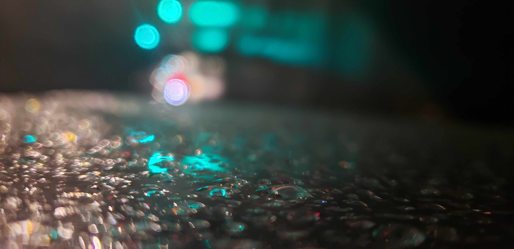

Raining Lights

This is a photo of a sign next to an entrance to the Fresh Pond trail near an intersection during a rainstorm. This was a part of project where I was taking a collection of abstract photos. I tried to focus in on the sign to make it so that the lights in the background don't make it too obvious of what they are. They could be traffic lights, some could be a sign for a fast food place. I'm really proud of how the reflections on the sign turned out, giving just enough to not seal all of the docus from the water drops.